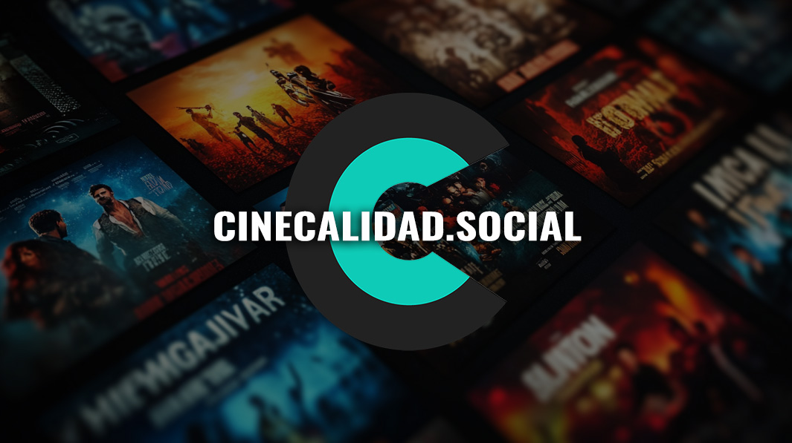

Cinecalidad Página Oficial Online - Descargar Películas Gratis
¿Te encanta ver películas sin gastar un peso y con excelente resolución? Cinecalidad es el sitio donde encontrarás todo el cine que deseas, disponible al instante y sin complicaciones. Prepárate para descubrir cómo funciona, sus ventajas y consejos para sacarle el máximo provecho.

¿Qué es cinecalidad?
Cinecalidad es una plataforma en línea que agrupa una amplia variedad de películas y series en alta definición. Su misión es ofrecer a los amantes del séptimo arte una experiencia de cine gratuita, sin suscripción y con actualizaciones constantes.
Orígenes de cinecalidad
La idea surgió de un grupo de cinéfilos que quisieron compartir sus títulos favoritos sin barreras económicas. Desde su lanzamiento, ha crecido hasta convertirse en una de las páginas más buscadas para ver cine sin costes ocultos ni registro obligatorio.
Ventajas de cinecalidad
- Gratis y sin suscripción: Nada de registros ni pagos; solo haz clic y disfruta.
- Alta calidad de video: Películas disponibles en HD, Full HD e incluso 4K.
- Amplio catálogo: Desde clásicos del cine hasta los estrenos más recientes.
- Actualizaciones frecuentes: Se añaden títulos nuevos cada semana.
- Sin publicidad invasiva: Ventanas emergentes mínimas para una experiencia fluida.
Comparación con otras plataformas
Aunque existen muchas opciones para ver cine gratis, cinecalidad destaca por su sencillez y confiabilidad:
| Plataforma | Costo | Catálogo | Suscripción |
|---|---|---|---|
| Cinecalidad | Gratis | Más de 5,000 títulos | No |
| PelisOnline | Gratis | 3,000 títulos | No, registro opcional |
| MegaPelículas | Gratis | 4,200 títulos | Con anuncios |
Cómo navegar por cinecalidad
- Abre tu navegador y ve a cinecalidad.ec, la página oficial.
- Explora las categorías: acción, drama, comedia, terror y más.
- Usa la barra de búsqueda para encontrar títulos específicos.
- Selecciona la calidad de video que prefieras (HD, Full HD o 4K).
- Haz clic en “Reproducir” o en el ícono de descarga para ver offline.
Consejos de expertos
“Cinecalidad ha revolucionado la forma en que disfrutamos del cine en línea. Su catálogo variado y la calidad de streaming lo hacen imprescindible.”
— Dra. Ana María López, experta en medios digitales
“Siempre recomiendo verificar que estés en la página oficial cinecalidad.ec para evitar imitaciones o sitios con malware.”
— Lic. Juan Carlos Ramírez, especialista en seguridad informática
“Aprovecha las listas de favoritos y crea tu propia colección de películas clásicas y estrenos.”
— Mtra. Sofía Torres, crítica de cine independiente
Conclusión
En resumen, cinecalidad es la solución perfecta para quienes buscan ver películas de calidad sin pagar ni registrarse. Con un catálogo extenso, actualizaciones constantes y una experiencia libre de publicidad intrusiva, está más cerca que nunca la sensación de tu sala de cine en casa. ¿Listo para tu maratón?
Preguntas Frecuentes
¿cinecalidad es legal?
La legalidad de cinecalidad puede variar según tu ubicación. Se recomienda usar siempre conexiones seguras y VPN si es necesario.
¿Necesito crear una cuenta?
No. Una de las grandes ventajas de cinecalidad es que no solicita registro ni datos personales.
¿Cómo elijo la mejor calidad de video?
Dependerá de tu conexión. Si tu internet es rápido, selecciona Full HD o 4K; de lo contrario, HD es una excelente opción para evitar interrupciones.
¿Puedo descargar películas?
Sí, la mayoría de los títulos ofrecen la opción de descarga directa para ver sin conexión.
¿Hay publicidad invasiva?
La plataforma minimiza los anuncios emergentes; suele haber un par de banners discretos para mantener el sitio gratis.
¿Dónde encuentro los estrenos más recientes?
En la sección “Novedades” de la página principal, siempre actualizada cada semana.
¿Puedo ver series y documentales?
Sí, además de películas, cinecalidad incluye series, documentales y cortometrajes en su catálogo.